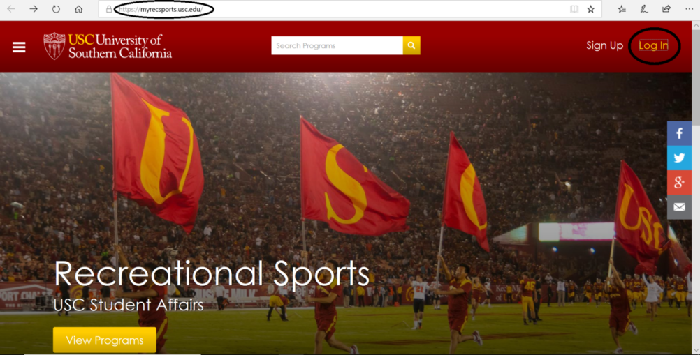
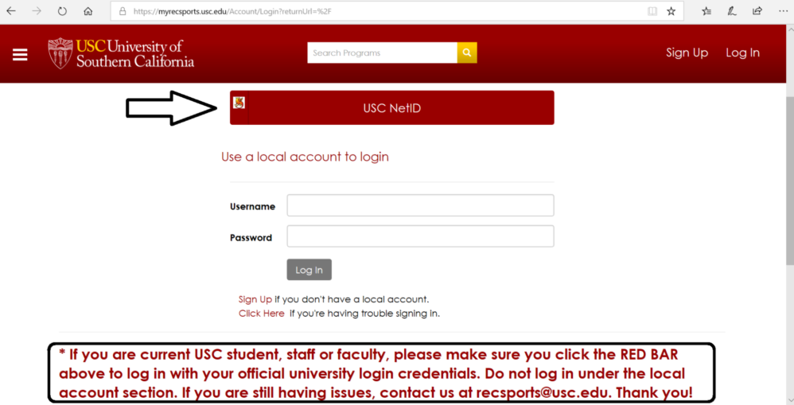
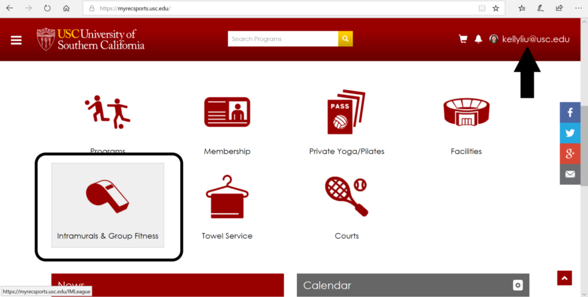
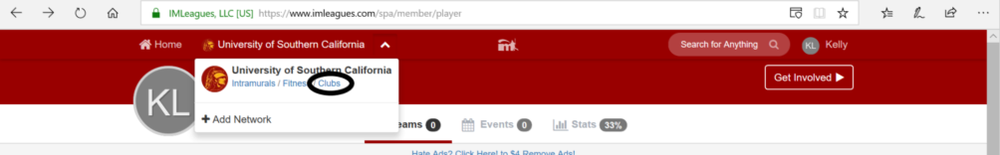
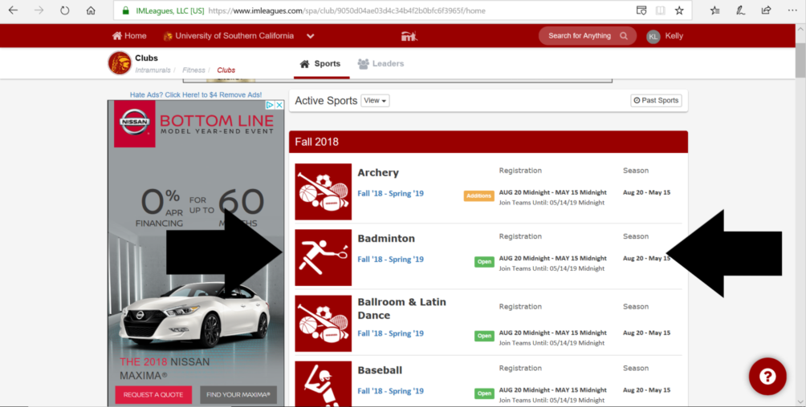
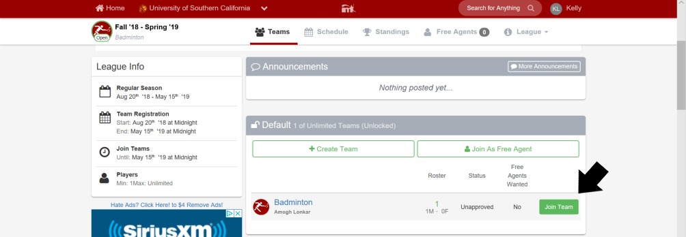
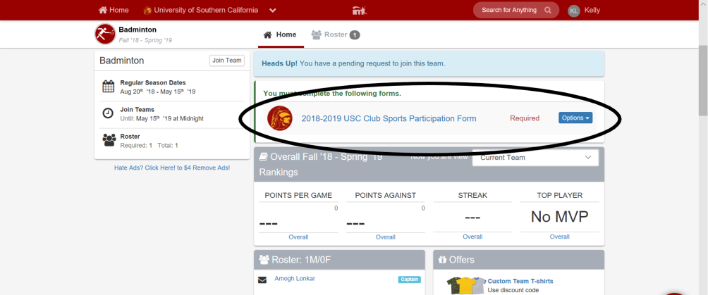

USC Badminton

USC RecSports Waiver
In order to comply with USC's legal requirements, USC Recreational Sports (which oversees the badminton club) requires participants to fill out the RecSports waiver. THIS IS DIFFERENT FROM THE WAIVER FOR THE LYON CENTER AND USC VILLAGE GYM! The RecSports leaders will come to practice to check that everyone at practice has a waiver. If you do not have it filled out, you WILL be thrown out of practice.
-
Go to the RecSports home page and log-in.

-
Follow the instructions to log in with your USC NetID through the USC Shibboleth portal.

-
After signing in, go to the Intramurals and Group Fitness section of the site and continue to the intramural registration site as instructed. You will be redirected to IMLeagues.

-
Your page should look similar to the one below. Hover over "University of Southern California" until a menu appears. Choose the "Clubs" option.

-
Choose the Badminton option under Active Sports. Make sure it is the correct school year!

-
Please join the default team! Do NOT create a new team. BUT YOU'RE NOT DONE YET...On the next page, please ACCEPT the terms and conditions.

-
The above steps were just to request to join the team. You also must fill out the USC Club Sports Participation Form. You'll see a page like the one below. Please press the link to the form and fill it out COMPLETELY. Click "Submit for Review" to finish the process.
NOTE: If you have the International USC Health Insurance and do not know your information, please follow the below steps
- Google "USC student insurance"
- Click on the first link that says "USC Student Health Insurance Plan | USC Engemann..”
- Click on the "Print Your Aetna Card" link which will bring you to the Aetna website
- Click on the "Print Your ID Card" tab on the column at the left
- Enter your student ID and date of birth where prompted and click "View Card"
- Select the current school term/year (there should only be one option, followed by your name) If there are any problems or questions, please ask an officer.

-
CONGRATULATIONS! YOU'RE DONE!
Subscribe to our mailing list!
I'm hosted with GitHub Pages.